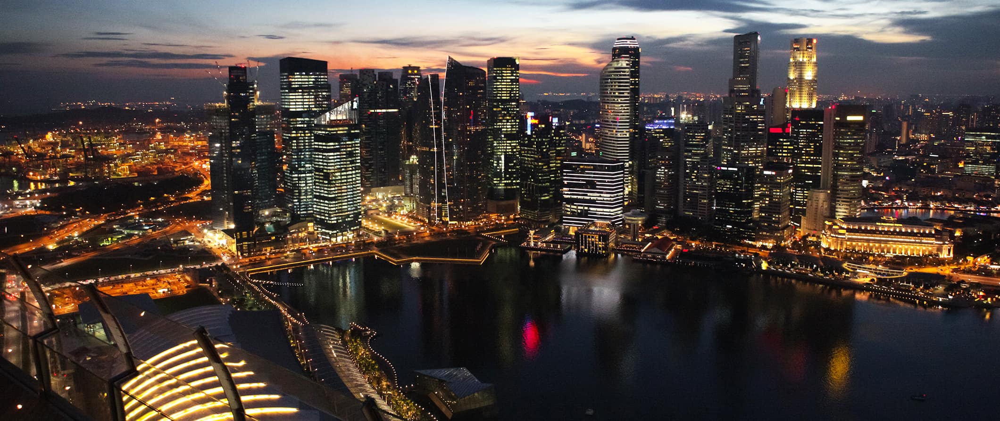

Singapore
Singapore is a cosmopolitan city-state that became independent from the British in 1965 and is now one of the
world’s leading economic centers in shipping and banking.
Backpacking Singapore – or just visiting on a budget – isn’t as big with travelers as it is with say Thailand,
Vietnam, or really any other place in Southeast Asia.
Singapore is expensive by Southeast Asian standards with everything costing about double what it does elsewhere in the region.
While most people come here for a couple of days just to “do” Singapore and check it off their bucket list, over the past few years,
the city has shed some of its stuffy nature and become much more fun and cosmopolitan city.
There are a growing cocktail and foodie scene here. Lots of activities are popping up too.
Singapore is one of my favorite cities in the world and a destination I love looking forward to so I can all the hawker food, Indian food, delicious seafood, and wander the lovely hiking trails in the north and sit on the beaches in the south.
Singapore rocks – and deserves more time than you plan on giving it.
Use this Singapore travel guide to help plan you trip and save some money.
When to Go to Singapore
When to Go to Singapore:
It’s always a good time to visit Singapore!
The island’s year-round warm, tropical
climate has daily temperatures in the 80s °F
(high 20s °C). November to June is the
high season, especially during the Chinese New Year. The Northeast Monsoon season occurs from November
to January, however, so you may encounter plenty of rain.
Late summer and early fall (July to October) is also a good time to visit if you’re hoping to avoid
all the tourist traffic. The weather is still pleasant, and the Southwest Monsoon (from June to September)
is not as harsh
as the Northeast Monsoon.

THINGS TO DO AND SEE SINGAPORE
-
1. Eat at the boat quay
Boat Quay is a hive of activity and is the place to go for dining and entertainment. The alfresco pubs
and restaurants also make Boat Quay ideal for relaxing after a long day of sightseeing. Try Wakanui
for quality Japanese steak cooked over a white oak fire, or Kinara for reasonably priced North Indian cuisine. Be sure
to bring a camera to capture the imposing skyscrapers and bizarre statues along the riverside.
2. See the super tress at gardens by the bay
Located along Marina Bay, this urban landscaping project
is a series of fake “supertrees”. At heights of 80-160 feet, the metal structures have roughly 200 species of
orchids, ferns, and other tropical plants coating their structure and forming a lush, colorful skin. It’s free
to walk through the outdoor gardens, but you have to pay $8 SGD ($6 USD) for entry
if you want to do the OCBC Skyway (the 128-metre long walkway through the canopy of the Supertree Grove).
3. Hangout on sentosa
This little island is popular with locals and tourists alike. You can visit Tiger
Sky Tower ($18 SGD/$13 USD), Asia’s tallest observation tower or Universal Studios, which is also on the island.
There are a host of bars, restaurants, and beaches here too. Hang out at Bora Bora Beach Bar or try the cable car
sky dining experience (although it isn’t cheap). You can get to Sentosa via
the Sentosa Express train, which is $4 SGD ($3 USD) – but if you enter on foot or by bicycle you’ll get free access..
4. Visit singapore zoo
5. Hang with the Merlions
Other Things to See and Do in Singapore
1. Admire Thian Hock Keng Temple
Stunning architecture makes Thian Hock Keng one of the most photogenic buildings
you’re likely to see in Singapore. The temple was built in 1840 and made from the finest materials available at the time,
and is the oldest Chinese temple in Singapore. It’s dedicated to Mazu, the Goddess of the Sea, and Chinese immigrants
came here to ask for safe passage before leaving to cross the South China Sea. The temple was designated as a national
monument in 1973. It’s open daily from 7:30am-5:30pm, and admission is free.
2. Explore Bukit Timah Nature Reserve
Bukit Timah is located within Singapore’s only remaining stretch of rainforest,
and is the country’s premier ecotourism attraction. You’ll find macaques, squirrels, flying lemurs, and various species of
birds. If you take the hiking or biking trails, you’ll be able to get up close to them. The reserve is 30 minutes from the
city center and is
open daily from 7am-7pm. The weekends get really busy, so if you want to avoid the crowds come during the week.
3. Wander around Chinatown
Chinatown encompasses two square kilometers of traditional Chinese life, nestled
beside the modern Central Business District. This remains the place to get a real sense of Chinese culture within
Singapore. The streets are filled with temples, craft shops, stalls, and restaurants and are a great place to pick up a
bargain. Head down Chinatown Food Street to find some char kway teow (stir-fried noodles) or grilled meats.
4. Take a trip to Pulau Ubinr
This island lies off the northeastern coast. It’s incredibly different from the
modern city — locals still use a diesel generator for electricity and fetch water from wells. Rent a bike and explore
sights, villages, and beaches of this island. To get there you have to hop on a bumboat from the Changi Point Ferry Terminal,
which costs about $3 SGD ($2 USD).
There are no fixed departure times – just simply line up and wait. Very few tourists make it out this way!!
5. Relax in the Singapore Botanic Gardens
The Botanic Gardens lie close to the city and consist of 52 hectares
of gardens and forest. The main attraction is the National Orchid Garden, which is home to over 1,000 species of orchids.
There is also a ginger garden, a rainforest, and various streams and waterfalls to explore. The Botanic Gardens are
Singapore’s first UNESCO World Heritage site. It’s open daily from 5am-12am, and admission is free.
6. Eat in Little India
No trip to Singapore is complete without a visit to Little India. Here you can get amazing,
cheap and delicious food, fresh vegetables, and interesting snacks and souvenirs. Seek out local favorites like roti prata
(pancakes) and teh tarik
(“pulled” tea). Make sure you eat at the giant cafeteria restaurants and don’t be afraid to eat with your hands!
7. Learn about Singapore’s History
For a more cultural experience, visit the former British naval base of Fort
Siloso located on Sentosa. It’s the only preserved fort on the coast of Singapore and provides a fantastic look into
the city-state’s complicated history, including the coastal guns and the remains of tunnels.
It’s a well-constructed, interactive attraction. Entry is $6 SGD ($4 USD). It’s open daily from 10am-6pm.
8. Visit Sri Mariamman Temple
This extremely colorful, ornate temple is the oldest Hindu temple in Singapore and was
built in 1827 in Chinatown. It was constructed in what is known as the Dravidian style and is devoted to the goddess Mariamman,
known for curing illnesses and diseases. During colonial times it was a hub
for community activities and was even the Registry of Marriages for Hindus. It’s open daily from 7am-12pm and 6pm-9pm.
Where To Stay in Singapore
Here are some of my favorite places to stay in Singapore:
Coral Hostel
Dream Lodge
The Inncrowd Backpackers Hostel 2
Quarters Capsule Hostel
Book things to do, attractions and tours with 10% discount